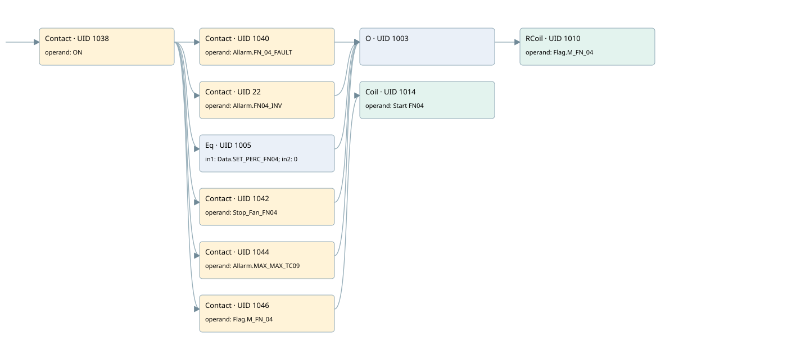

fn04
motors 1 · 검색 색인 순서 36 · 원본 내부 NID 추정 35
백업 PLF 원본의 2812098 바이트 위치에서 복원한 XML. 검색 문서 1965의 객체 키 16102200c011000000000000와 연결했다. 이름 해석 10/10개. 남은 RefId는 상수 또는 미해석 참조다.
연결 구조 다시 그리기
원본 Part/PCon/Wire를 이용한 연결도다. TIA 화면의 래더 배치 또는 실행 결과를 재현한 그림은 아니다. 핀 연결은 아래 표와 원본 XML을 기준으로 읽는다. 노드 위에 마우스를 두면 피연산자 이름을 볼 수 있다.

접점·코일·블록과 피연산자
| Part UID | Gate | Negated 핀 | 연결 피연산자 |
|---|---|---|---|
| 1038 | Contact | operand = ON | |
| 1040 | Contact | operand = Allarm.FN_04_FAULT | |
| 22 | Contact | operand = Allarm.FN04_INV | |
| 1005 | Eq | in1 = Data.SET_PERC_FN04; in2 = 0 | |
| 1042 | Contact | operand = Stop_Fan_FN04 | |
| 1044 | Contact | operand = Allarm.MAX_MAX_TC09 | |
| 1003 | O | ||
| 1010 | RCoil | operand = Flag.M_FN_04 | |
| 1046 | Contact | operand = Flag.M_FN_04 | |
| 1014 | Coil | operand = Start FN04 |
접점 경로를 펼친 조건식
Contact·O/A·비교기의 원본 연결을 읽기 쉽게 펼친 보조 해석이다. POWER는 전원 레일 시작을 뜻한다. 호출 블록·에지·타이머의 내부 동작과 다중 쓰기 순서는 이 표로 실행 검증하지 않았다. 미해석 핀과 RefId는 원문 연결표에서 확인한다.
| UID | 동작 | 대상 | 원본 접점 경로 | 내용 |
|---|---|---|---|---|
| 1010 | RCoil | Flag.M_FN_04 | ((ON AND Allarm.FN_04_FAULT) OR (ON AND Allarm.FN04_INV) OR (ON AND [Data.SET_PERC_FN04 = 0]) OR (ON AND Stop_Fan_FN04) OR (ON AND Allarm.MAX_MAX_TC09)) | 조건 성립 시 Reset |
| 1014 | Coil | Start FN04 | (ON AND Flag.M_FN_04) | 조건에 따른 Coil 기록 |
원본 배선 연결
| Wire UID | 동일 Wire 연결 끝점 |
|---|---|
| 1048 | Powerrail {} ↔ Part 1038.in |
| 1024 | ORef 1015 (ON) ↔ Part 1038.operand |
| 1039 | Part 1038.out ↔ Part 1040.in ↔ Part 22.in ↔ Part 1005.pre ↔ Part 1042.in ↔ Part 1044.in ↔ Part 1046.in |
| 1025 | ORef 1016 (Allarm.FN_04_FAULT) ↔ Part 1040.operand |
| 1041 | Part 1040.out ↔ Part 1003.in1 |
| 21 | ORef 23 (Allarm.FN04_INV) ↔ Part 22.operand |
| 24 | Part 22.out ↔ Part 1003.in2 |
| 1026 | ORef 1017 (Data.SET_PERC_FN04) ↔ Part 1005.in1 |
| 1027 | ORef 1018 (0) ↔ Part 1005.in2 |
| 1028 | Part 1005.out ↔ Part 1003.in3 |
| 1029 | ORef 1019 (Stop_Fan_FN04) ↔ Part 1042.operand |
| 1043 | Part 1042.out ↔ Part 1003.in4 |
| 1030 | ORef 1020 (Allarm.MAX_MAX_TC09) ↔ Part 1044.operand |
| 1045 | Part 1044.out ↔ Part 1003.in5 |
| 1031 | Part 1003.out ↔ Part 1010.in |
| 1033 | ORef 1021 (Flag.M_FN_04) ↔ Part 1010.operand |
| 1034 | ORef 1022 (Flag.M_FN_04) ↔ Part 1046.operand |
| 1047 | Part 1046.out ↔ Part 1014.in |
| 1036 | ORef 1023 (Start FN04) ↔ Part 1014.operand |
식별자 해석 근거 10개
| ORef UID | RefId | 이름 | IdentXmlPart 파일 | 해석 방법 |
|---|---|---|---|---|
| 1015 | 1 | ON | 0602-IdentXmlPart.xml | UID/RID + search-text + NID agreement |
| 1016 | 171 | Allarm.FN_04_FAULT | 0604-IdentXmlPart.xml | UID/RID + search-text + NID agreement |
| 23 | 215 | Allarm.FN04_INV | 0604-IdentXmlPart.xml | UID/RID + search-text + NID agreement |
| 1017 | 172 | Data.SET_PERC_FN04 | 0604-IdentXmlPart.xml | UID/RID + search-text + NID agreement |
| 1018 | 22 | 0 | 0606-IdentXmlPart.xml | literal candidate: UID/RID/NID + nearby named declarations + search-text agreement |
| 1019 | 170 | Stop_Fan_FN04 | 0605-IdentXmlPart.xml | UID/RID + search-text + NID agreement |
| 1020 | 12 | Allarm.MAX_MAX_TC09 | 0604-IdentXmlPart.xml | UID/RID + search-text + NID agreement |
| 1021 | 173 | Flag.M_FN_04 | 0604-IdentXmlPart.xml | UID/RID + search-text + NID agreement |
| 1022 | 173 | Flag.M_FN_04 | 0604-IdentXmlPart.xml | UID/RID + search-text + NID agreement |
| 1023 | 265 | Start FN04 | 0602-IdentXmlPart.xml | UID/RID + search-text + NID agreement |
검색 코드 보조 자료
참조 명칭을 찾기 위한 자료이며 실행 순서나 AND/OR 관계는 위 연결표로 확인한다.
"on" "allarm".fn_04_fault "flag".m_fn_04 "allarm".fn04_inv "data".set_perc_fn04 0 #stop_fan_fn04 "allarm".max_max_tc09 "flag".m_fn_04 "start fn04"